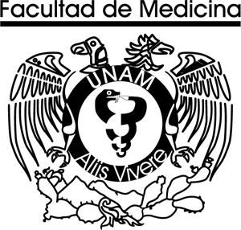
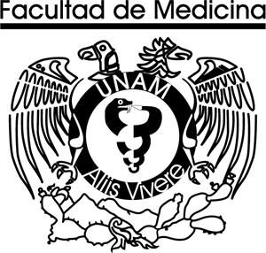

Roles y busqueda de información:
Montufar Hernández Daira Yaritza:
- Investigación y estructuración de información de "La transexualidad en la sociedad contemporánea"
- Investigación y estructuración de información de "Disfunciones"
- Investigación y estructuración de información de "Concepto Biopsicosocial de la Sexualidad"
Pérez Fuentes Ernesto:
- Investigación y estructuración de información de "Desarrollo de la Sexualidad"
- Investigación y estructuración de información de "Diversidad sexual y lenguaje incluyente."
- Investigación y estructuración de información de "Concepto Biopsicosocial de la Sexualidad"
Rosario Sampedro David:
- Investigación y estructuración de información de "Parafilias"
Sánchez Neri Miranda:
- Investigación y estructuración de información de "La orientación sexual"
- Investigación y estructuración de información de "La transexualidad en la sociedad contemporánea"
Velázquez García Diego:
- Investigación y estructuración de información de "Concepto Biopsicosocial de la Sexualidad"
- Investigación y estructuración de información de "Disfunciones"
- Programación y Diseño
- Coordinador
 

Referencias:
- Dirección General de Divulgación de la Ciencia, UNAM Publicado en UNAM al día. (2019, 27 julio). La UNAM te explica: Transexualidad. Fundación UNAM. Recuperado 29 de marzo de 2022, de https://www.fundacionunam.org.mx/unam-al-dia/la-unam-te-explica-transexualidad/-Cárdenas, G. (2022). Transexualidad. Entre el estigma y el acoso. ¿Como vez?
- Leal Cercós, C.; Gisbert Calabuig, J.A.; Sánchez Blanque, A. Disfunciones sexuales Trastornos de la personalidad Publicado January 1, 2019.
- Profamilia. (2021, 10 noviembre). Orientaciones sexuales: definición y tipos. Recuperado 27 de marzo de 2022, de https://profamilia.org.co/aprende/diversidad-sexual/orientaciones-sexuales/
- Rubio-Aurioles, E. (2014). Sexualidad y salud mental. En: Fuente de la, J.R. y Heinze,
- G. (eds.). Salud mental y medicina psicológica (2ª Ed.) (pp. 51-67). México: McGraw-Hill.
- Barragán V. (s.f.). "Diversidad sexual y lenguaje incluyente". http://psiquiatria.facmed.unam.mx/wp-content/uploads/2022/02/Diversidad-sexual-y-lenguaje-incluyente-1.pdf
- Fouilloux C., Rubio E. (s.f.) "SEXUALIDAD HUMANA". http://psiquiatria.facmed.unam.mx/wp-content/uploads/2022/02/Introduccion-a-la-sexualidad-humana.pdf
- Fouilloux C., Rubio E. (s.f.)"CONSIDERACIONES SOBRE LA ORIENTACIÓN SEXUAL".http://psiquiatria.facmed.unam.mx/wp-content/uploads/2022/02/Consideraciones-sobre-la-orientacion-sexual-1.pdf
- Fouilloux C., Rubio E. (s.f.) "Introduccion a la sexualidad humana" http://psiquiatria.facmed.unam.mx/wp-content/uploads/2022/02/Introduccion-a-la-sexualidad-humana.pdf
- De la Fuente JR y Heinze G (2014). Salud mental y medicina psicológica (2ª ed.). México: McGraw Hill. Cap. 6: Sexualidad y salud mental (p. 51-67).